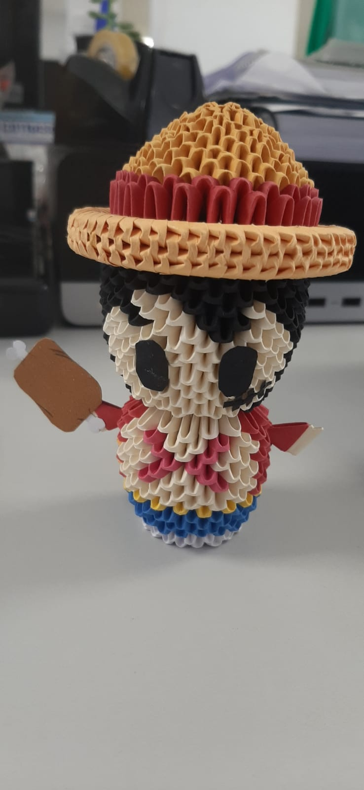
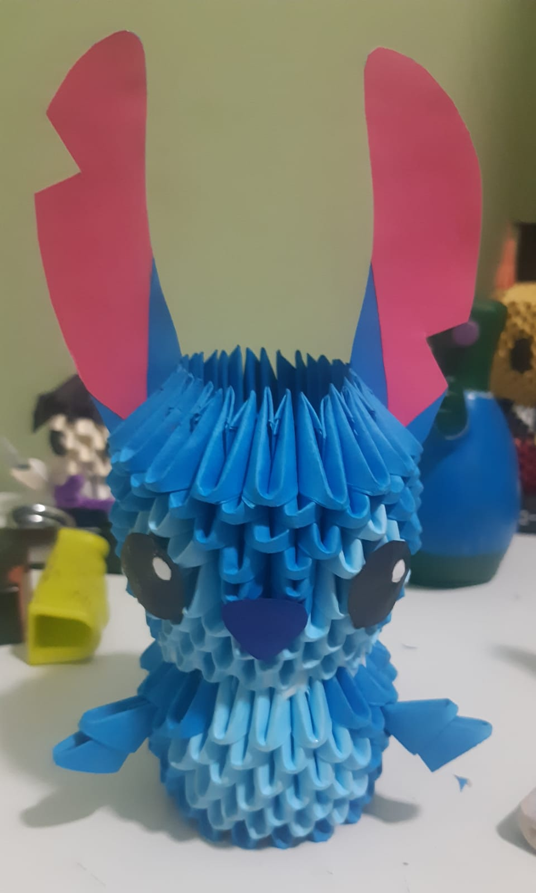
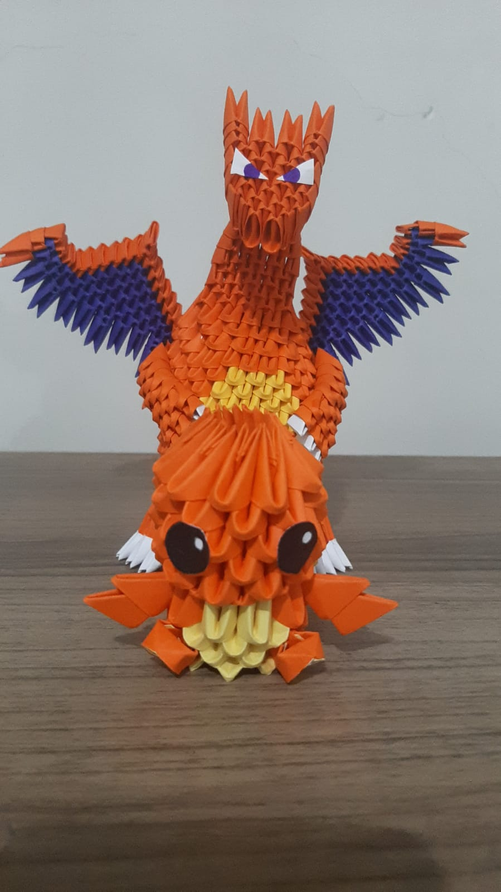

PERSONAGENS DE ORIGAMI 3D
Aqui estão alguns personagens que eu fiz ao longo do tempo:
- Tails (Sonic the Hedgehog 2)
<

- Aang (Avatar: A Lenda de Aang)

- Mangle (Five Nights at Freddy's 2)
<

- Zero (O Estranho Mundo de Jack)

- Sir Pentious (Hazbin Hotel)

- Monkey D. Luffy (One Piece)
<

- Stitch (Lilo e Stitch)

- Charmander e Charizard (Pokémon)

AQUI ESTÃO ALGUNS CANAIS DE CRIADORES DE ORIGAMI 3D: